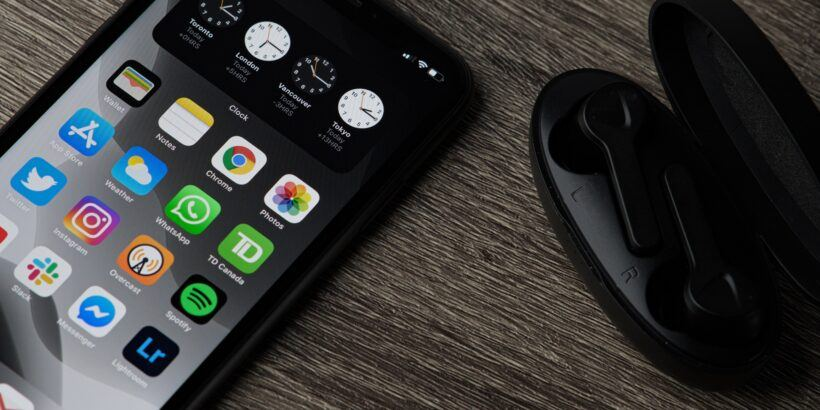

November 10, 2020
5 reasons you might NOT need a mobile app

When I'm scrolling through my mobile phone the last days, I'm recognizing that I haven't installed many apps that were not pre-installed. To be honest, for a long time was thinking, it was just me with this "app avoidance behaviour". However, I went curious and asked my social bubble about how many and what apps they have installed. After I got some input, I started to realize, that others also don't download many apps for different reasons. In fact, sometimes it feels even painful to only have the "tool" app, without a suitable Desktop or web alternative (e.g. for my bank accounting analytics). So today, whenever I have to argument about pro / con app, I have 5 indicators when you don't need an app:
1. You have a business2business model
Let's start with something simple: If your business is B2B, your main application shouldn't be an app. The reason is simple: B2B licensing is almost never done via the app stores or in-app transactions. What happens instead is, that people will download your app, won't be able to use it and leave bad reviews in the app store (no matter HOW FAT YOU WROTE, that it's not for public usage 😜). This will cost time, money and nerves. So if you publish something in an app store, make sure it provides some value for B2C (business to consumer).
2. You don't need too much "native" features
Now this is a big one for me: Why do you actually NEED a mobile app? Does it have any benefit to implement it, or is it just "cool" to have an app? Many apps that are offered are not using the full potential of native apps. If you don't need to have access to all the 28 sensors of the latest x-phone and don't need the store as marketing instrument, why should you take the extra effort to maintain a native app? Even if you need some "native" features, you can most often rely on using a progressive web app (PWA), because things like camera, push messages etc. are already supported. If you're curious, open this page on your mobile phone and you can see the exact featureset, that is provided without creating a native app.
3. You have a data heavy application
As I wrote in the introduction, some apps can be a pain to use. This might be personal taste, but I can identify them for myself most of the time as "data heavy applications". What do I mean with that? Every app, where you need to type much, swipe much, present analytics, show plenty of tables and so on. Smartphones don't have a physical keyboard (anymore) and most people cannot write 1 sentence correctly without looking at the screen. It might be okay to write some sentences in a messenger or a short email on the mobile, but don't expect the user to write novels in your app. And if you really need to provide this app, please provide at least a desktop / web alternative, so that they have the choice to do the heavy work on a computer.
4. Your development cycle becomes more complex and expensive
Providing apps is expensive. And I don't mean, it creates "a bit" additional expenses - it's huge!
Let's start with the obvious things:
- You have to have a developer account per app store (at least google and apple)
- You pay for the publishing into the appstore
- You need a different build pipeline to deploy into the stores
So that's what everyone has on their mind, if they think of additional costs, right?
Now let's think a little bit further:
Your developers need to get a huge knowledge about all platforms
I hear you saying: "Why? There's react native, nativescript and whatever out there! Writing native apps is easy!"
Nope, it's not!
First of all, those abstraction Frameworks are exactly this - an abstraction of the different platforms with the benefit of a "single codebase". However, abstraction always means, that it has to find the lowest common denominator between the different platforms. So as long as you don't do something "special", your code will work out of the box. But as we identified in the previous reasons already, the whole point about providing an app, is to provide something special!
So faster than you even know it, your developers have to learn at least three frameworks: Android, iOS and react native / nativescript / ...
Most of the time, the abstraction frameworks also have some "CSS-like" styling syntax. This basically means, that you cannot use your already created CSS from your web application, but have to write the exact same code in a different manner to make it app compatible.
Apple has built their own community
Have you ever tried to develop an iOS app with Windows? It doesn't work, because apple has shut down all doors to the outside. If you want to have an iOS app, you're forced to give out macs to your developers (and if they aren't used to it, they'll wonder about the new keyboard layout😁).
"But we're already using macs to work!"
Okay cool - this simplifies things. But... how do you test iOS apps in your continuous integration pipeline?
The answer is: You need additional services, that offer you dedicated time on a mac to do automatic testing. This is (of course) expensive, because there are not many providers who offer calculation power on macs.
5. You have a flexible application with lots of changes
Another thing that isn't considered when introducing an app is, that it takes time to update it in the app store.
Have this breaking change of the API or this super critical security update? You have to wait up to 48 hours until it's out there!
The different platforms use a combination of manual and automatic reviewing which is of course good for the app store reputations, but very bad for the developer experience. And depending on the platform, you cannot even force the update of your app, so people might still be working with an old version.
Summary
As you can see in my argumenation, the decision of making an app should be well reasoned. I'm not all against providing native apps for your customer, but I think the decision in favor for an app is oftenly made way too quickly and without considering, how much impact this will have on your product lifecycle and maintenance costs.